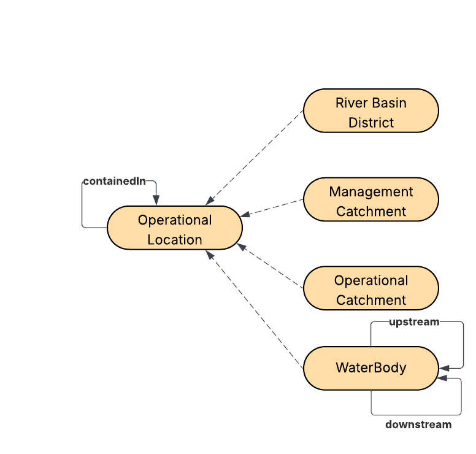

A model intended for common reuse across datasets describing the catchment operational hierarchy. catchment hierarchy, where the larger units contain 1 or many of the smaller units. This runs largest to smallest as follows: River Basin District → Management Catchment → Operational catchment → Water body. The catchment hierarchy provides a common pointable at backbone for lots of water related data and dataset authors are encouraged to provide a meaningful link to a level in the hierarchy when possible.

IRI: http://environment.data.gov.uk/ontology:EAarea
IRI: http://environment.data.gov.uk/ontology:ManagementCatchment
IRI: http://environment.data.gov.uk/ontology:OperationalCatchment
IRI: http://environment.data.gov.uk/ontology:OperationalLocation
IRI: http://environment.data.gov.uk/ontology:RiverBasinDistrict
IRI: http://environment.data.gov.uk/ontology:Waterbody
IRI: http://environment.data.gov.uk/ontology:WaterBodyType
IRI: http://environment.data.gov.uk/ontology:containedIn
IRI: http://environment.data.gov.uk/ontology:downstremBody
IRI: http://environment.data.gov.uk/ontology:upstreamBody
IRI: http://environment.data.gov.uk/ontology:waterBodyType
IRI: http://environment.data.gov.uk/ontology:description
IRI: http://environment.data.gov.uk/ontology:imageURL
IRI: http://environment.data.gov.uk/ontology:label
This HTML document was obtained by processing the OWL ontology source code through LODE, Live OWL Documentation Environment, developed by Silvio Peroni .